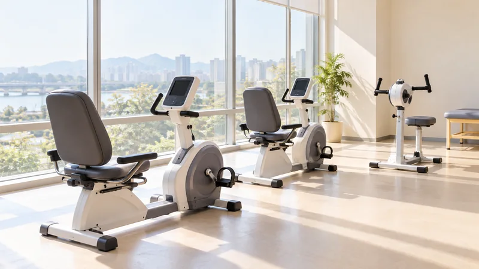

GODEUN REHABILITATION CENTER
온라인 예약

고객센터
운영시간
일요일 & 공휴일은 휴진입니다.
| 재활과목 |
|
||
|---|---|---|---|
| 희망 진료일 |
|
진료시간 | |
| 작성자 |
|
성별 |
|
| 핸드폰번호 |
|
생년월일 |
|
|
예약내용 (불편하신 증상) |
|||
곧은 재활센터(이하 ‘센터’라 한다)개인정보 보호법 제30조에 따라 정보를 안전하게 다루는 기준을 마련하고 이를 공개합니다. 정보 처리와 관련하여 발생하는 문의나 불편 사항을 원활하게 접수·해결하기 위한 절차도 다음 방침에서 안내합니다.
개인정보의 처리 목적
이 방침에서 정한 정보 이용 목적을 다음 항목에서 설명합니다.
개인정보를 아래에 설명한 처리 목적과 다른 용도에 사용하지 않습니다. 이후 목적을 달리하여 처리할 필요가 생기면 별도 동의 등 해당 상황에 필요한 보호 절차를 먼저 진행합니다.
가.진료 및 추가서비스
나.민원 처리
홈페이지 서비스별 개인정보 수집목적
| 이용 경로 | 필수 정보 |
|---|---|
| 진료예약 | 진단 및 치료를 위한 진료예약 |
| 검진예약 | 종합적으로 건강검진 위한 예약 |
개인정보의 처리 및 보유기간
개인정보의 관리 기간은 수집할 때 동의받은 범위와 법에서 정한 기준에 따릅니다. 이용하거나 제공받은 목적이 끝났더라도 다른 법률에서 보존하도록 정한 자료는 해당 기간 동안 별도로 보관하며, 아래에 안내한 보존 대상에도 같은 기준을 적용합니다.
개인정보의 제3자 제공
다른 기관에 개인정보를 제공하려면 원칙적으로 정보주체의 사전 동의를 받습니다. 다만 의료법·국민건강보험법·의료급여법·산업재해보상보험법·자동차손해배상보험법·형사소송법 등 적용 법률에서 제공 근거와 절차를 정한 경우에는 그 기준에 따릅니다. 이러한 동의나 법률상 사유가 없는 제3자 제공은 하지 않습니다.
개인정보처리의 위탁
개인정보 처리 업무가 원활하게 이루어지도록 아래에 안내한 범위의 작업을 수탁기관에 맡기고 있습니다.
위탁 업무에 관한 계약서에는 정해진 업무 밖의 정보 사용 금지, 기술·관리상 보호 조치, 다시 위탁할 수 있는 범위, 감독 절차와 손해 발생 시의 책임 등을 명시합니다. 계약 후에도 수탁기관이 개인정보를 적절하게 보호하는지 확인합니다. 맡기는 업무의 내용이나 담당 업체가 달라지면 변경 사실을 이 개인정보처리방침에 신속하게 반영해 공개합니다.
| 위탁 업체명 | 위탁 업무명 |
|---|---|
| 심평원 | 심사 청구 |
| 근로복지공단 | 산재 승인업무 |
| 응급의료정보화센터 | NEDIS 업무 |
| 국민의료보험공단 | 자격조회 업무 |
| 보건소 | 전염병신고 및 예방접종 |
| 각 부처 사회복지과 | 긴급지원, 의료급여 자격확인 |
| 외부 검사 수탁기관 | 검체의뢰 |
| 홈페이지 운영 수탁기관 홈페이지 | 유지보수 |
개인정보 위탁업체 정보
| 위탁 업체명 | 위탁 업무명 |
|---|---|
| 심평원 | 심사 청구 |
| 근로복지공단 | 산재 승인업무 |
| 응급의료정보화센터 | NEDIS 업무 |
| 국민의료보험공단 | 자격조회 업무 |
| 보건소 | 전염병신고 및 예방접종 |
| 각 부처 사회복지과 | 긴급지원, 의료급여 자격확인 |
| 외부 검사 수탁기관 | 검체의뢰 |
| 홈페이지 운영 수탁기관 홈페이지 | 유지보수 |
정보주체의 권리ㆍ의무 및 행사방법
정보주체는 자신의 개인정보에 대하여 아래에 적힌 보호 권리를 병원에 요청할 수 있으며, 이러한 요청은 언제든지 가능합니다.
다음에 해당하는 사정이 확인되면 요청 사항의 전부 또는 일부에 대하여 이행을 제한하거나 거절할 수 있습니다.
다.권리행사 방법 및 절차
본인의 정보를 확인하거나 고쳐 달라는 요청, 삭제 요청은 확인 절차를 거쳐 처리합니다. 이 방침에서 정한 방문 신청 방식으로 본인 여부를 확인하며, 정보 보호를 위해 전화·우편·팩스만으로 신청하는 열람·정정·삭제 절차는 운영하지 않습니다.
이용자 본인과 법정대리인이 정보를 확인·관리하는 방법
14세가 되지 않은 아동의 개인정보를 수집하는 때에는 해당 아동의 법정대리인에게 먼저 동의를 받아야 합니다.
처리하는 개인정보 항목
서비스를 운영하는 데 꼭 필요한 범위로 수집 항목을 정하며, 목적에 비해 불필요한 개인정보는 받지 않습니다.
아래에는 서비스에서 처리하는 정보 항목을 구분해 안내합니다. 선택 정보는 제출 여부를 직접 정할 수 있고, 입력하지 않더라도 의료서비스 자체를 이용하는 데에는 제한이 없습니다.
가.인터넷 진료예약 신청 시
가.인터넷 진료예약 신청 시
오프라인
가.진료 시
나.진료비 수납 시
홈페이지 서비스별 개인정보 수집항목
| 이용 경로 | 필수 정보 |
|---|---|
| 진료예약 | 예약 신청 정보: 신청자와 연락처, 선택한 진료과 및 신청 날짜·시간 |
| 검진예약 | 예약 신청 정보: 신청자와 연락처, 선택한 진료과 및 신청 날짜·시간 |
개인정보의 파기
수집한 자료는 이 방침 제2조에서 설명한 개인정보 이용·보관 기간에 따라 관리하며, 각 항목의 보관 기준을 적용합니다.
보관 목적이나 정해진 기간이 끝나 필요가 없어진 정보는 지체 없이 폐기합니다. 동일한 자료를 제공받은 제3자가 있다면 그 기관에도 파기를 요청합니다.
보관을 마친 자료를 폐기하는 순서와 적용 방식은 아래에 안내합니다.
가.파기절차
나.파기방법
개인정보의 안전성 확보조치
정보가 유출되거나 손상되는 일을 막기 위해 다음의 개인정보 보호 수단과 관리 절차를 적용합니다.
가.관리적 조치
나.기술적 조치
다.물리적 조치
개인정보 보호책임자
정보 보호 업무를 총괄하는 책임자와 담당 부서를 아래에 안내합니다. 개인정보 처리에 대한 고충이나 피해 구제를 요청하실 때 이 담당자에게 문의하실 수 있습니다.
개인정보 보호책임자 정보
| 이름 | 직책 | 연락처 | 메일 | 비고 |
|---|---|---|---|---|
| 김한수 | 경영지원팀장 | 010-4894-4905 | 민트클 |
개인정보 보호책임자
병원 서비스를 이용하면서 생긴 개인정보 관련 질문이나 불만, 피해 구제 요청은 보호책임자 또는 담당 부서에 접수하실 수 있습니다. 병원은 접수된 내용의 사실관계를 살펴 지체 없이 답변하고 필요한 처리를 진행합니다.
개인정보 열람청구
정보주체는 개인정보 보호법 제35조에 근거하여 자신에 관한 자료의 열람을 청구할 수 있습니다. 신청할 부서와 접수 방법은 아래에 안내합니다.
열람 신청이 들어오면 담당 부서가 신속히 검토하고 처리할 수 있도록 접수 절차를 운영합니다.
개인정보 보호책임자 정보
| 부서명 | 연락처 | 메일 |
|---|---|---|
| 경영지원부 | 031-000-6814 | 민트클 |
권익침해 구제방법
아래 기관은 병원이 운영하는 부서가 아닌 외부 기관입니다. 자체적인 문의 처리나 피해 구제 결과만으로 해결되지 않거나 추가 상담이 필요한 경우 해당 기관에 도움을 요청하실 수 있습니다.
개인정보보호 종합지원 포털
개인정보 침해신고센터
개인정보 분쟁조정위원회
경찰청 사이버테러대응센터
개인정보 처리방침 변경
개인정보 처리 기준을 바꾸는 경우 변경된 조항과 적용 시점을 홈페이지 공지로 알려드립니다.
공고일자 : 2026 년 11 월 02 일
시행일자 : 2026 년 11 월 02 일
곧은정형외과의 영상 촬영 장비 운영 기준
곧은정형외과의 영상 촬영 장비 운영 기준과 관리 절차를 안내합니다.
개요
영상정보의 관리
촬영 영상은 권한을 가진 담당자만 확인할 수 있도록 관리합니다. 장비에 접속해 자료를 볼 때에는 비밀번호 등 인증을 거치며, 영상 보관 공간의 출입문도 잠가 허가되지 않은 사람의 접근을 막습니다.
영상정보의 열람·확인법
촬영된 본인의 영상이 있는지 확인하거나 영상을 보고 싶을 때에는 개인영상정보 청구서를 작성해 운영 담당자에게 내시면 됩니다. 영상의 확인과 이용은 아래에서 정한 사유와 범위 안에서만 가능합니다.
영상정보의 열람·확인의 거부
보관할 수 있는 기간이 지나 이미 삭제한 영상은 제공할 수 없습니다. 이 밖에도 영상 운영자가 요청을 받아들이기 어려운 정당한 사유가 있으면 확인이나 열람을 거절할 수 있습니다.
영상정보의 파기와 안전관리
영상은 촬영한 날부터 최대 20일 이내의 보관 기준을 적용합니다. 보관이 끝난 전자 자료는 되살릴 수 없게 영구 삭제하고, 출력한 자료는 파쇄 또는 소각 방식으로 폐기합니다.
촬영 장비의 설치와 운영을 외부 보안 업체에 맡기는 경우에도 자료 보호 여부를 확인합니다. 수탁업체가 영상정보를 안전하게 다루도록 업무를 감독합니다.